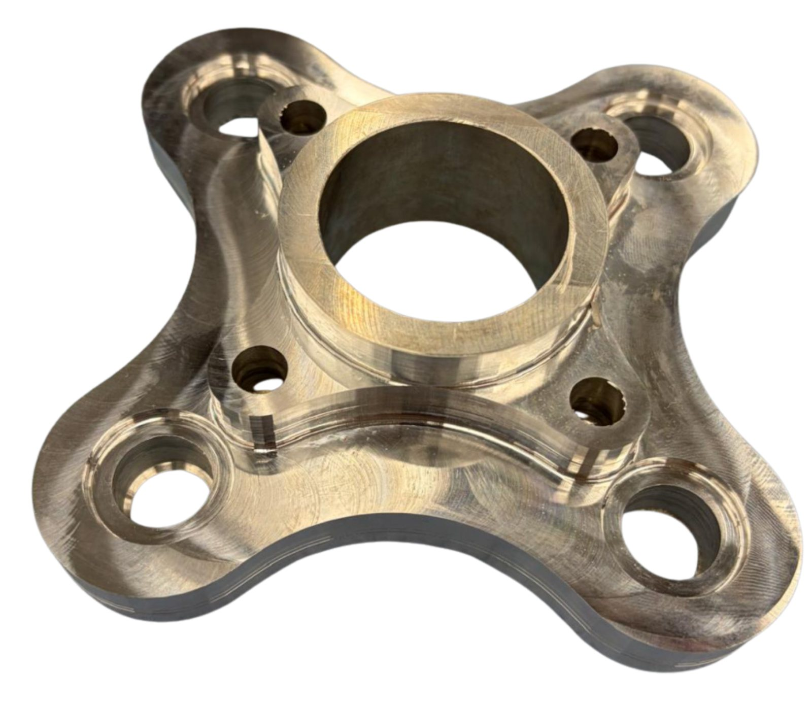
Baja SAE Suspension
Wheel hubs, a lighter pedal assembly, and a CVT cooling model for an off-road racing vehicle.
Overview
Olin Baja SAE designs and manufactures a custom off-road racing vehicle for the Baja SAE collegiate competition series. From September 2025 to May 2026, I worked on the car's wheel hubs, redesigned its pedal assembly, helped fabricate it, and modeled how hot its CVT gets during an endurance race.
The suspension connects the wheels to the chassis: it absorbs shocks from the terrain, allows controlled motion, and affects steering and braking. The wheel hub sits at the center of each corner. It carries road loads into the suspension and chassis through the knuckle, holds the brake rotor and the wheel studs, and transfers power from the CV axle to the wheel through a spline.
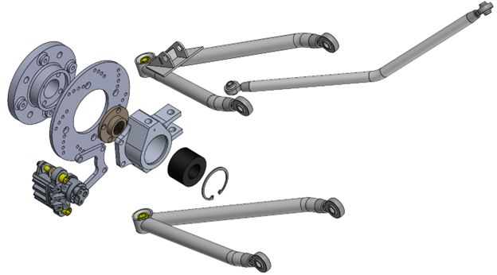
My role
I was on the suspension sub-team. I worked on wheel hub design, researched whether the car could use an anti-roll bar, redesigned and lightweighted the pedal assembly, and helped fabricate the car. For my thermodynamics class I also built the cooling model of the car's CVT. I modeled in Onshape and SOLIDWORKS, ran FEA in SOLIDWORKS, and machined parts on the manual and CNC mill.
Design & build
Wheel hubs
The hub had to be machinable in-house and support every expected load, while matching the wheel studs' hole size and pitch circle diameter, lining up with the brake rotor's mounting holes, and fitting the splined hub's mounting pattern. My goal was to minimize weight while staying robust, since the hub is unsprung mass. I moved from the previous round hub to a four-arm shape to remove unnecessary mass.
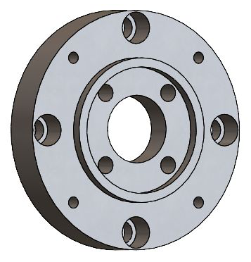
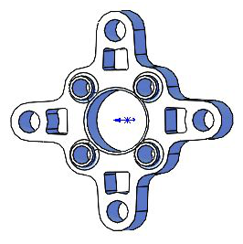
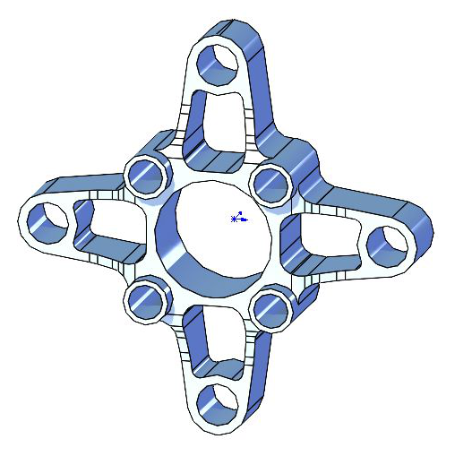
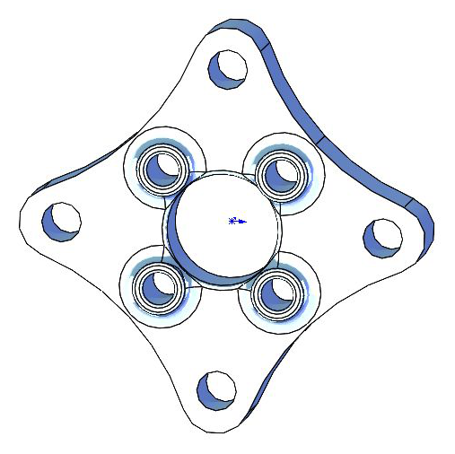
I presented the concepts at my first suspension design review in October 2025. In SOLIDWORKS I ran FEA with remote loads for a jump (8,818 N) and a bump (8,000 N, 13,600 N, and 8,000 N in x, y, and z). Under the jump load, Design 1 only reached a factor of safety of 0.84, while Design 3 reached 2.1.
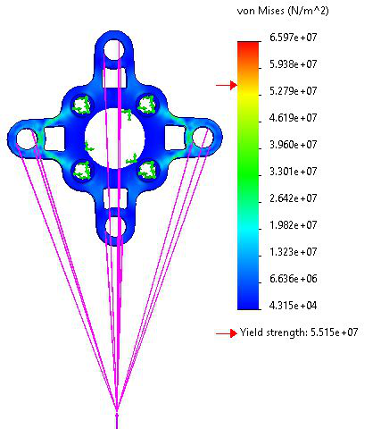
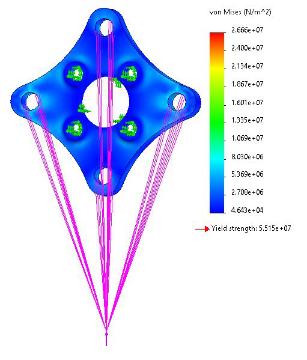
My next steps from the review were to put less emphasis on weight and more on structural integrity: trying different materials and adding support at the weak spots the FEA showed.
Pedal assembly
I redesigned the throttle and brake pedal assembly to be much lighter, top-mounted, and attached to the chassis with tabs, so the whole assembly can easily be removed and repaired. The assembly is all steel, since it's welded to the chassis. The old assembly weighed about 31.35 lb, and my goal was to stay below about 18 lb while getting the factor of safety above 2 everywhere. The final assembly weighs 17.26 lb, about 45% less than the old one.
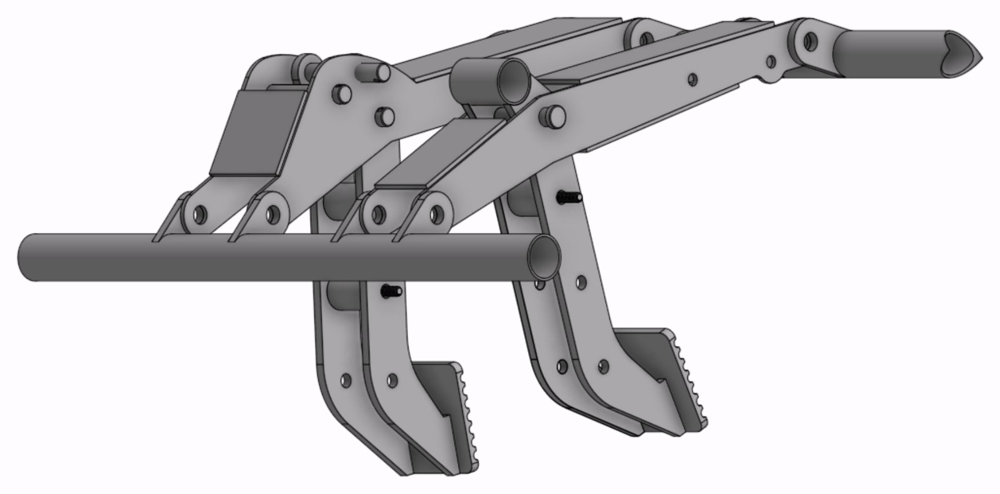
I optimized the throttle assembly first and used what I learned for the brake assembly. For the load case, I assumed a driver can leg press 500 lb and push at up to 30° away from straight down on the pedal, which gives a side load of about 1,000 N. The three things I varied were the vertical plate thickness (high weight cost), the top and bottom plate width (medium weight cost), and the top and bottom plate position, moving them closer to the pivot (no weight cost).
I iterated in SOLIDWORKS FEA:
- Iteration 1: the first steel check had a minimum factor of safety of 0.51.
- Iteration 2: lengthening the top plates raised it to 1.013, at 9.915 lb.
- Iteration 3: I added material around the holes in the top plates and removed the pedal's top pin, which had been causing inaccuracy. Removing the pin dropped the minimum factor of safety to 0.9172 (9.85 lb).
- Iteration 4: larger tabs brought it to 0.99 at 10.062 lb. The only region below a factor of safety of 1 was on the pedal itself, which was being changed and strengthened for the final design.
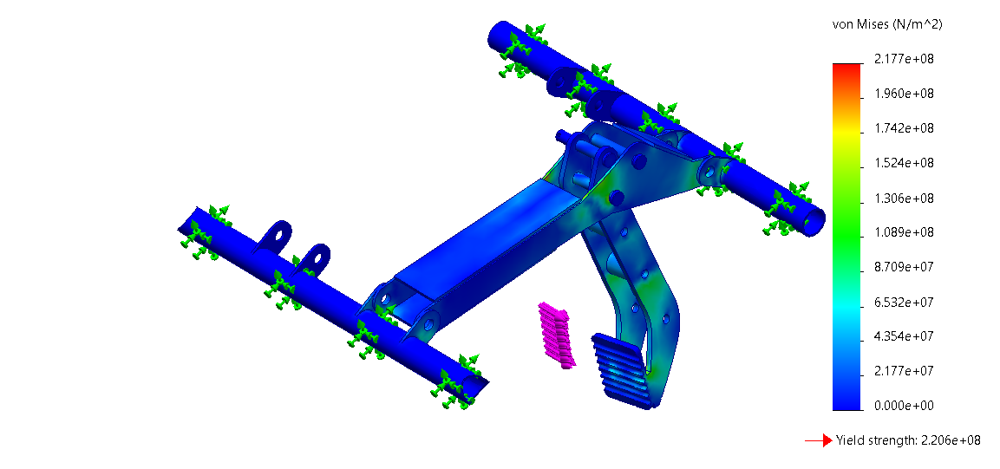
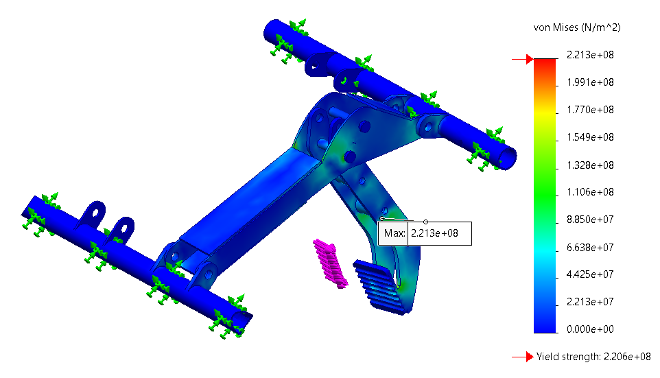
For the brake pedal I also worked out how far the pedal needs to travel. The car has separate front and back brake circuits, each with its own master cylinder, linked to the pedal by a bias bar. If one circuit fails, the pedal must travel far enough to actuate the surviving circuit, but not so far that it hits the hard stop before it generates braking force. I calculated the fluid volume needed to close the pad-to-rotor clearance from the caliper piston areas, the master cylinder travel that needs, and the pedal travel through the pedal ratio.
Fabrication
I 3D printed jigs to hold parts in place for welding, and machined the wheel hubs and smaller parts like the steering column spacers and a fork bushing housing (more on the Machining page).
CVT thermal model
Every Baja SAE team runs the same engine, so performance depends heavily on the drivetrain and the continuously variable transmission (CVT). The rubber belt CVT loses around 18% of the power passing through it as heat (mean efficiency 0.818 while moving), and the rules require a guard that fully encloses it and traps hot air. If the belt gets too hot, the rubber softens and glazes, grip drops, and the belt can fail mid-race.
For Introduction to Thermodynamics, two teammates and I asked: how hot does our CVT get during the 4-hour endurance race, and which design and driving factors control its temperature? We built a thermal resistance network with four lumped nodes (sheaves, belt, guard air, and guard wall), included heat from the engine, and simulated it second by second over a measured 114-minute drive cycle from McMaster Baja's endurance GPS data.
I built the model of the CVT itself: every way heat moves and leaves inside the guard. Each node is treated as one uniform temperature, since the metal conducts well and the spinning parts stir the air.
- Sheave convection: I modeled each sheave as a spinning disk (von Kármán). The rotational Reynolds numbers are below the laminar-to-turbulent transition found by Cobb and Saunders, giving h = 41.8 W/m²K on both sheaves. Inner faces count at reduced effectiveness, since air is trapped between the rotating halves, and a calibration factor of 3 accounts for the turbulent guard air and ribbed, non-smooth sheaves.
- Belt: convection off the back of the belt with a laminar flat plate model (1.48 W/K), and conduction from the flexing rubber into the sheaves (0.79 W/K).
- Air exchange through the mesh: disk pumping from the spinning sheaves, wind along the mesh (reduced by the firewall's shadow), and buoyancy, combined in quadrature: 0.0108 m³/s (22.8 CFM), or 13.0 W/K.
- Guard walls, shaft, and radiation: guard air to wall (4.84 W/K) and wall to outside (2.21 W/K), conduction down the shaft to the gearbox (0.30 W/K), and radiation through the mesh (0.02 W/K).
The conductances depend on the film temperatures, so the steady-state network is solved as a matrix system and iterated until every temperature changes by less than 0.01 °C. For the transient, each node stores heat by lumped capacitance and is stepped forward every second with the explicit Euler method, giving a system time constant of about 13 minutes.
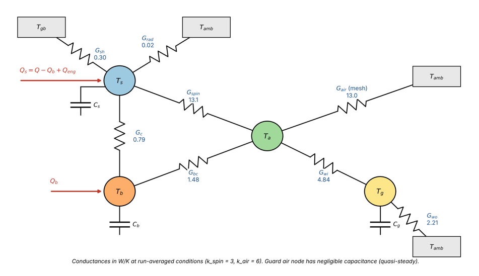
At average conditions the belt reaches a steady-state temperature of about 109 °C (sheaves 106 °C). Over the drive cycle, the belt crosses its ~93 °C continuous operating limit after about 35 minutes and peaks at about 132 °C. About 87% of the heat (565 of 649 W) leaves by air exchange through the guard's mesh panel, so mesh airflow is the main cooling path.
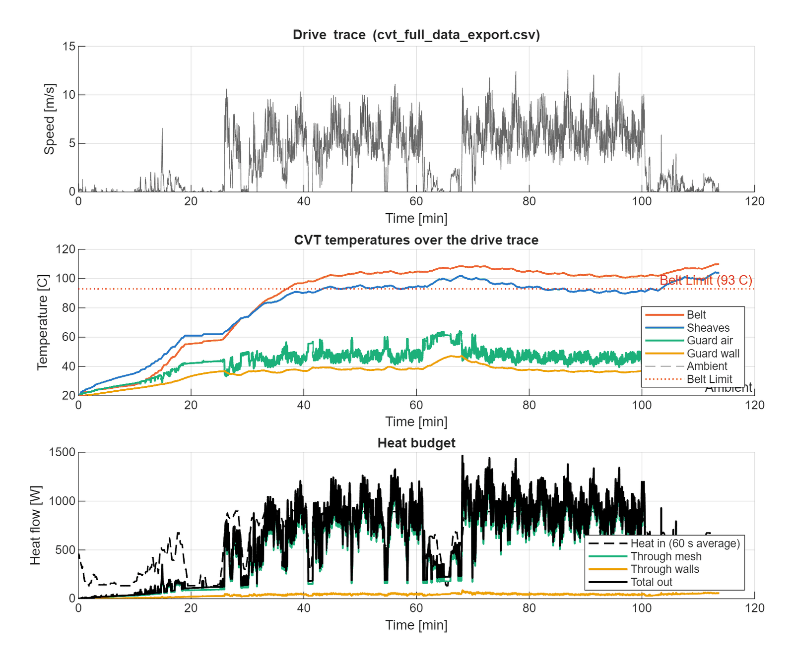
To find a fix, we swept vehicle speed against airflow and the diameter of a ram-air intake duct. At the 3.45 m/s race average, a 4-inch duct brings the steady belt temperature down to about 91 °C, under the limit, and lowers the transient peak from 132 °C to about 107 °C. A duct of at least 4 inches, combined with more mesh area or less time idling, is needed to keep the belt within its limit for the whole race.
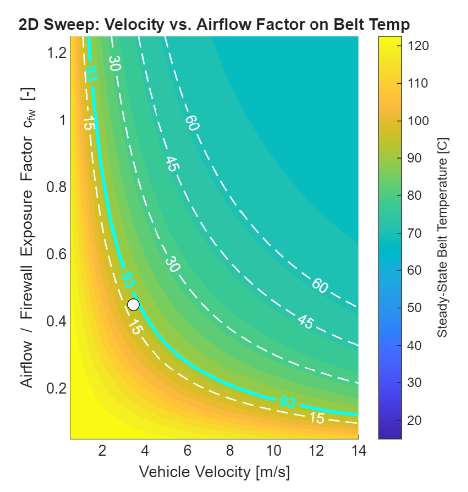
Results
The car performed well overall, and we were happy with its performance at the 2026 Baja SAE competition in Ohio.
- 46th overall and 25th in the maneuverability event at the 2026 Ohio competition
- Pedal assembly redesigned to be top-mounted and removable, from 31.35 lb to 17.26 lb (about 45% lighter)
- CVT model predicts a 132 °C belt peak; a 4-inch intake duct lowers it to about 107 °C
Next steps
Next, we're designing and fabricating a new car from scratch in one year. It will be a lot lighter and smaller, with a more robust suspension: double wishbones front and rear with bushings instead of rod ends, and better shocks.